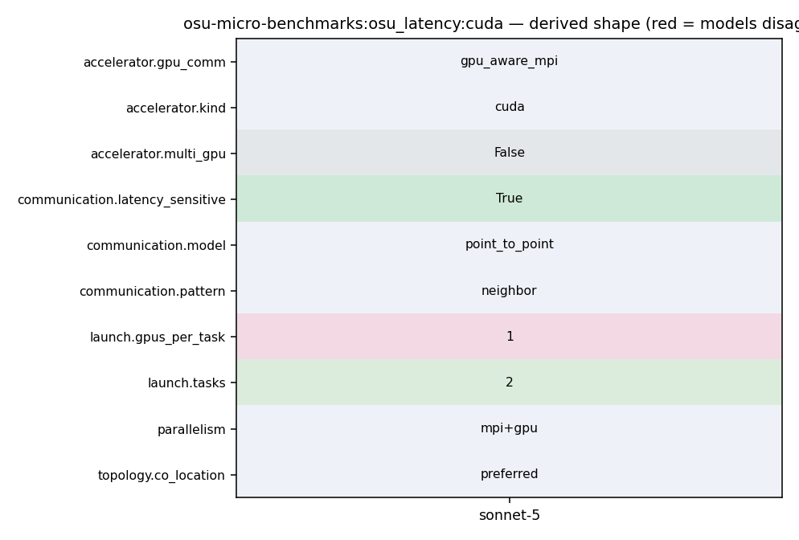

mpirun_rsh -np 2 -hostfile hostfile MV2_USE_CUDA=1 osu_latency D D
1037 1038 Examples: 1039 1040 - mpirun_rsh -np 2 -hostfile hostfile MV2_USE_CUDA=1 osu_latency D D 1041 - mpirun_rsh -np 2 -hostfile hostfile MV2_USE_ROCM=1 osu_latency D D 1042 1043 In this run, the latency test allocates buffers at both rank 0 and rank 1 on 1044 the GPU devices. 1045 1046 - mpirun_rsh -np 2 -hostfile hostfile MV2_USE_CUDA=1 osu_bw D H 1047 - mpirun_rsh -np 2 -hostfile hostfile MV2_USE_ROCM=1 osu_bw D H
44 po_ret = process_options(argc, argv); 45 omb_populate_mpi_type_list(mpi_type_list); 46 47 if (PO_OKAY == po_ret && NONE != options.accel) { 48 if (init_accel()) { 49 fprintf(stderr, "Error initializing device\n"); 50 exit(EXIT_FAILURE); 51 } 52 } 53 if (options.omb_tail_lat) { 54 omb_lat_arr = malloc(options.iterations * sizeof(double)); 55 OMB_CHECK_NULL_AND_EXIT(omb_lat_arr, "Unable to allocate memory");
29 [], 30 [enable_openacc=no]) 31 32 AC_ARG_ENABLE([cuda], 33 [AS_HELP_STRING([--enable-cuda], 34 [Enable CUDA benchmarks (default is no). Specify 35 --enable-cuda=basic to enable basic cuda support 36 without using cuda kernel support for 37 non-blocking collectives]) 38 ], 39 [NVCC="nvcc"], 40 [enable_cuda=no]) 41 42 AC_ARG_WITH([cuda], 43 [AS_HELP_STRING([--with-cuda=@<:@CUDA installation path@:>@],
112 113 Point-to-Point MPI Benchmarks 114 ----------------------------- 115 osu_latency - Latency Test 116 * The latency tests are carried out in a ping-pong fashion. The sender 117 * sends a message with a certain data size to the receiver and waits for a 118 * reply from the receiver. The receiver receives the message from the sender 119 * and sends back a reply with the same data size. Many iterations of this 120 * ping-pong test are carried out and average one-way latency numbers are 121 * obtained. Blocking version of MPI functions (MPI_Send and MPI_Recv) are 122 * used in the tests. This test is available here. 123 124 osu_latency_mt - Multi-threaded Latency Test 125 * The multi-threaded latency test performs a ping-pong test with a single
194 touch_managed_src_no_window(s_buf, size, ADD); 195 } 196 #endif /* #ifdef _ENABLE_CUDA_KERNEL_ */ 197 MPI_CHECK(MPI_Send(s_buf, num_elements, 198 omb_curr_datatype, 1, 1, omb_comm)); 199 MPI_CHECK(MPI_Recv(r_buf, num_elements, 200 omb_curr_datatype, 1, 1, omb_comm, 201 &reqstat)); 202 #ifdef _ENABLE_CUDA_KERNEL_ 203 if (options.src == 'M') { 204 touch_managed_src_no_window(r_buf, size, SUB); 205 } 206 #endif /* #ifdef _ENABLE_CUDA_KERNEL_ */ 207 if (i >= options.skip && 208 j == options.warmup_validation) { 209 t_end = MPI_Wtime(); 210 t_total += calculate_total(t_start, t_end, t_lo); 211 if (options.omb_tail_lat) { 212 omb_lat_arr[i - options.skip] = 213 calculate_total(t_start, t_end, t_lo) * 214 1e6 / 2.0; 215 } 216 if (options.graph) { 217 omb_graph_data->data[i - options.skip] =
183 omb_curr_datatype, omb_buffer_sizes); 184 MPI_CHECK(MPI_Barrier(omb_comm)); 185 } 186 if (myid == 0) { 187 for (j = 0; j <= options.warmup_validation; j++) { 188 if (i >= options.skip && 189 j == options.warmup_validation) { 190 t_start = MPI_Wtime(); 191 } 192 #ifdef _ENABLE_CUDA_KERNEL_ 193 if (options.src == 'M') { 194 touch_managed_src_no_window(s_buf, size, ADD); 195 } 196 #endif /* #ifdef _ENABLE_CUDA_KERNEL_ */ 197 MPI_CHECK(MPI_Send(s_buf, num_elements, 198 omb_curr_datatype, 1, 1, omb_comm)); 199 MPI_CHECK(MPI_Recv(r_buf, num_elements, 200 omb_curr_datatype, 1, 1, omb_comm, 201 &reqstat)); 202 #ifdef _ENABLE_CUDA_KERNEL_ 203 if (options.src == 'M') { 204 touch_managed_src_no_window(r_buf, size, SUB); 205 } 206 #endif /* #ifdef _ENABLE_CUDA_KERNEL_ */
1070 A copy of this script is installed as get_local_rank alongside the benchmarks. 1071 It can be used as follows: 1072 1073 mpirun_rsh -np 2 -hostfile hostfile MV2_USE_CUDA=1 get_local_rank \ 1074 ./osu_latency D D 1075 mpirun_rsh -np 2 -hostfile hostfile MV2_USE_ROCM=1 get_local_rank \ 1076 ./osu_latency D D 1077 1078 Support for Derived Data Types 1079 ------------------------------
1037 1038 Examples: 1039 1040 - mpirun_rsh -np 2 -hostfile hostfile MV2_USE_CUDA=1 osu_latency D D 1041 - mpirun_rsh -np 2 -hostfile hostfile MV2_USE_ROCM=1 osu_latency D D 1042 1043 In this run, the latency test allocates buffers at both rank 0 and rank 1 on
12 13 double calculate_total(double, double, double); 14 15 int main(int argc, char *argv[]) 16 { 17 int myid, numprocs, i, j; 18 int size; 19 MPI_Status reqstat; 20 omb_graph_options_t omb_graph_options; 21 omb_graph_data_t *omb_graph_data = NULL; 22 char *s_buf, *r_buf; 23 double t_start = 0.0, t_end = 0.0, t_lo = 0.0, t_total = 0.0; 24 int po_ret = 0; 25 int errors = 0; 26 size_t num_elements = 0; 27 MPI_Datatype omb_curr_datatype = MPI_CHAR; 28 size_t omb_ddt_transmit_size = 0; 29 int mpi_type_itr = 0, mpi_type_size = 0, mpi_type_name_length = 0; 30 char mpi_type_name_str[OMB_DATATYPE_STR_MAX_LEN]; 31 MPI_Datatype mpi_type_list[OMB_NUM_DATATYPES]; 32 int papi_eventset = OMB_PAPI_NULL; 33 MPI_Comm omb_comm = MPI_COMM_NULL; 34 omb_mpi_init_data omb_init_h; 35 options.bench = PT2PT;
1037 1038 Examples: 1039 1040 - mpirun_rsh -np 2 -hostfile hostfile MV2_USE_CUDA=1 osu_latency D D 1041 - mpirun_rsh -np 2 -hostfile hostfile MV2_USE_ROCM=1 osu_latency D D 1042 1043 In this run, the latency test allocates buffers at both rank 0 and rank 1 on 1044 the GPU devices. 1045 1046 - mpirun_rsh -np 2 -hostfile hostfile MV2_USE_CUDA=1 osu_bw D H 1047 - mpirun_rsh -np 2 -hostfile hostfile MV2_USE_ROCM=1 osu_bw D H